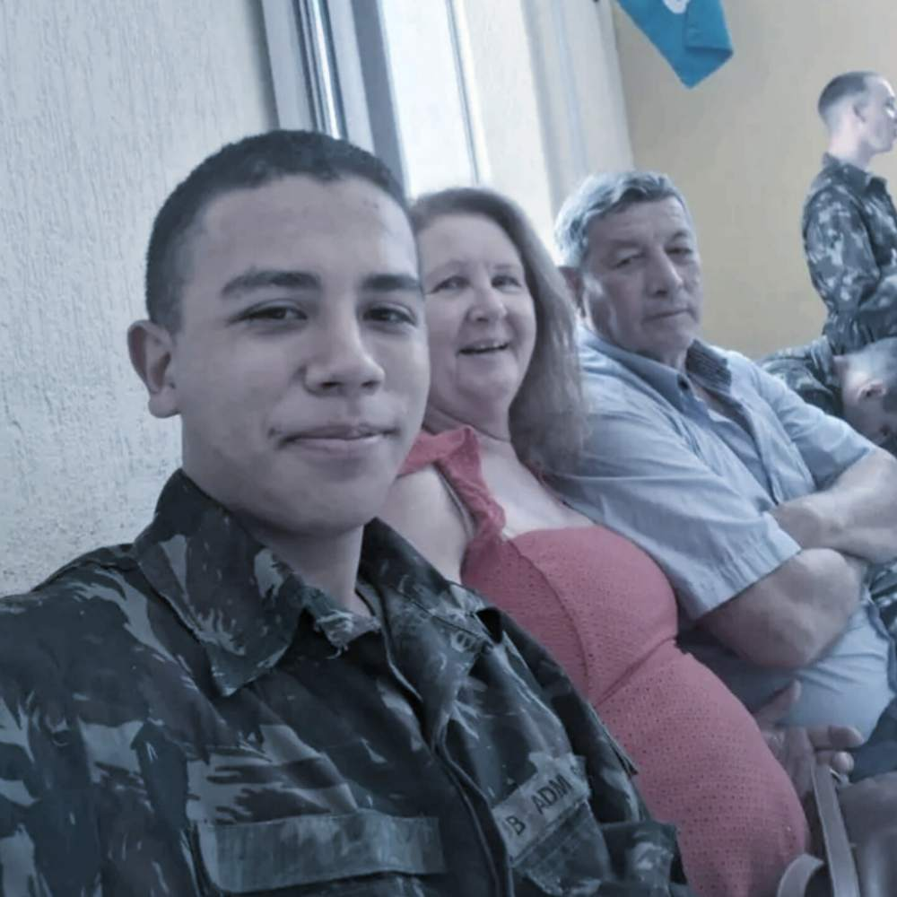
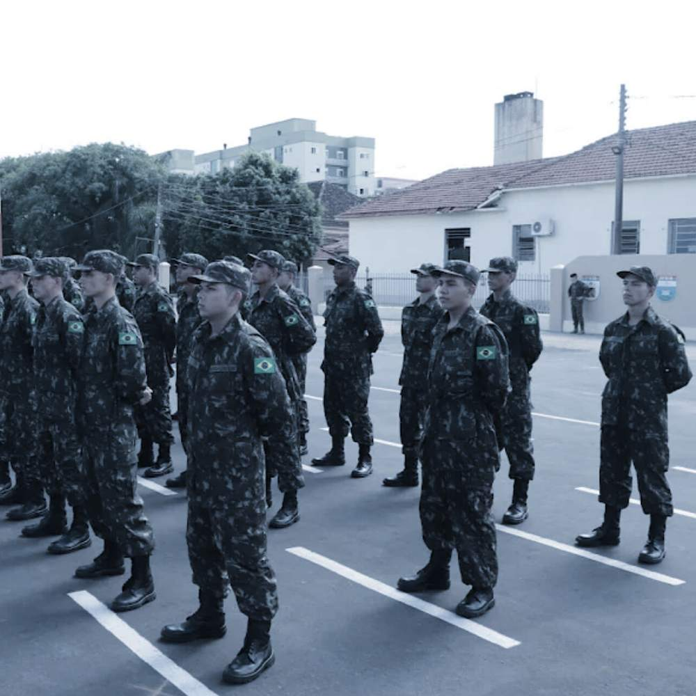

MILITAR EXPULSO
Qui. 11 de Julho de 2024
O resultado de uma sindicância surpreendeu o soldado Carvalho com o seu resuldado: Um licenciamento a bem da disciplina. Esse resultado foi confirmado pelo comandante Everton Conceição Soares e a decisão foi o afastamento do referido militar, pois a quebra de 3 das normas escritas no Regulamento Disciplinar do Exército. Com base na sua sindicância, foi imposto que o soldado Carvalho cometeu as seguintes Transgressões Disciplinares:
09 - deixar de cumprir prescrições expressamente estabelecidas no Estatuto dos Militares ou em outras leis e regulamentos, desde que não haja tipificações como crime ou contravenção penal, o pundonor militar ou decoro da classe;
40 - portar-se de maneira inconveniente ou sem compostura;
82 - deixar de ter consigo documentos de identidade que o identifiquem;
O desfecho da sindicância que resultou no licenciamento do soldado Guilherme de Abreu Carvalho, sob a justificativa de "a bem da disciplina", não apenas expõe a rigidez do sistema militar, mas também revela uma alarmante falta de compaixão e compreensão acerca das complexidades emocionais e psicológicas que permeiam a vida de um jovem militar. Ao confirmar essa decisão, o comandante Soares parece ter ignorado que, por trás das transgressões disciplinares, existem indivíduos com suas vulnerabilidades, desafios e, muitas vezes, crises pessoais.
As infrações cometidas por Carvalho — não portar documentos de identificação, comportar-se de maneira inconveniente e deixar de cumprir prescrições — embora sérias, não justificam um afastamento tão drástico. Essas ações, resultantes de um momento de descontrole sob influência do álcool, deveriam ser tratadas como um sinal de que o jovem precisava de apoio e orientação, e não como um motivo para condená-lo à marginalização. O Exército, que deveria ser um espaço de formação e desenvolvimento, falha ao não oferecer a possibilidade de reabilitação e aprendizado.
A entrega de seus pertences ao subtenente Pires simboliza não apenas a perda de um título militar, mas também a destruição de inúmeras oportunidades futuras. O licenciamento à bem da disciplina não é apenas uma mancha no histórico militar de Carvalho; é um estigma que o acompanhará por toda a sua vida, limitando suas opções em termos de emprego, educação e cidadania. É inaceitável que, em um sistema que preza por valores como honra, lealdade e camaradagem, a resposta a um erro cometido por um jovem seja a exclusão severa e implacável, ao invés de uma abordagem que busque a reabilitação e o aprendizado.
Em uma sociedade que clama por empatia e compreensão, a falta de sensibilidade em relação às dificuldades enfrentadas por muitos jovens soldados é uma crítica contundente à cultura militar que ainda persiste em tratar comportamentos indesejados com mão de ferro. O soldado Carvalho, ao final de seu percurso militar, não apenas perdeu sua posição nas fileiras do Exército, mas também a chance de se tornar um cidadão pleno, capaz de contribuir de maneira significativa para a sociedade. Essa realidade nos leva a refletir sobre o verdadeiro significado de disciplina e sobre como podemos, de fato, apoiar aqueles que se encontram em situações difíceis, em vez de simplesmente punir e marginalizar. É essencial que o sistema militar repense suas abordagens, promovendo um ambiente onde a recuperação e o crescimento sejam priorizados, ao invés da exclusão e do ostracismo.